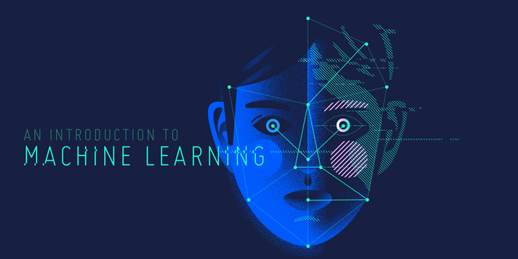

Μια εισαγωγή στην Μηχανική μάθηση
Μηχανική μάθηση είναι πεδίο της τεχνητήs νοημοσύνηs που αναπτύχθηκε από τη μελέτη της αναγνώρισης προτύπων και της υπολογιστικής θεωρίας μάθησης.
Η Μηχανική μάθηση εφαρμόζεται σε μια σειρά από εργασίες, όπου τόσο ο σχεδιασμός όσο και ο προγραμματισμός των αλγορίθμων είναι ανέφικτος. Παραδείγματα εφαρμογών αποτελούν τα φίλτρα spam(spam filtering), η αυτόματη αναγνώριση χαρακτήρων, οι μηχανές αναζήτησης και η υπολογιστική όραση. Η Μηχανική μάθηση μερικές φορές συγχέεται και με την εξόρυξη δεδομένων.
